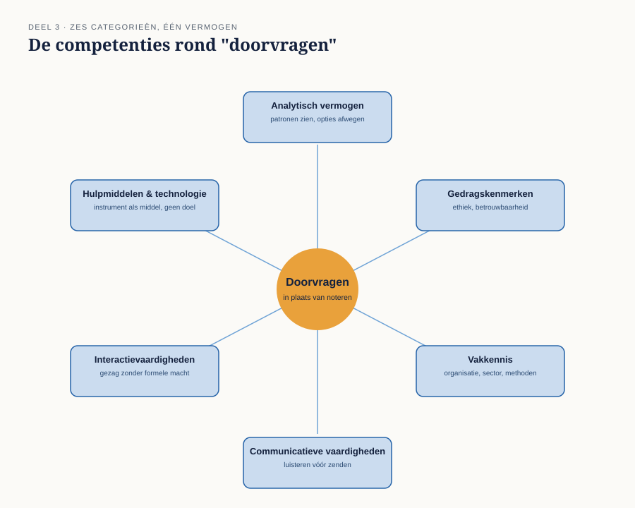
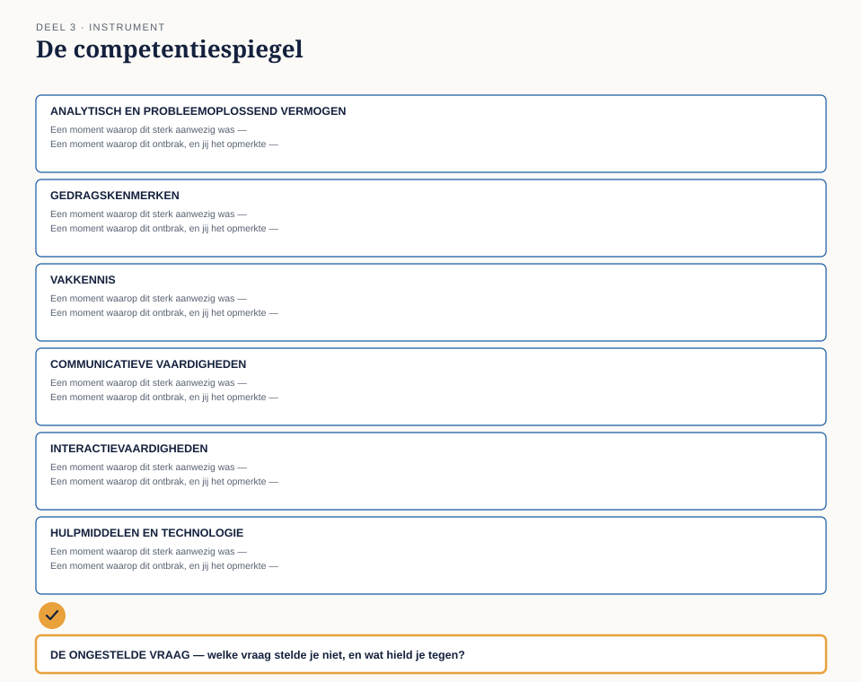

Cursus Businessanalyse · Niveau 1 (ECBA) · Deel 3 van 30
Houding, principes en de eigen competenties.
Deel 1 gaf u een instrument om een verandering scherp te formuleren, deel 2 een denkraam om een situatie volledig te ontleden. Beide gaan ervan uit dat u iets doet dat vanzelfsprekend klinkt en in de praktijk het minst vanzelfsprekende van het vak is: doorvragen. Dit deel gaat over de houding die daarvoor nodig is — met de bekentenis van Ayla Demir, informatieanalist bij WGP 2.0, die opschreef wat er gezegd werd en niet doorvroeg — en over de zes categorieën onderliggende competenties die die houding ondersteunen, vastgelegd in de competentiespiegel.
8secties
±3uleestijd + werkboek
6controlevragen
B3bevinding gesloten
Positionering. Deze cursus is een voorbereiding op het ECBA-examen van IIBA en uitdrukkelijk geen vervanging van het officiële examenmateriaal — A Guide to the Business Analysis Body of Knowledge (BABOK Guide) en The Business Analysis Standard, beide gratis te raadplegen via iiba.org. Alle formuleringen, figuren en werkvormen in dit materiaal zijn van Ductus; studeer voor het examen altijd óók de bron.
Niveau 1: ➊ Verandering mogelijk maken → ➋ Het denkraam → ➌ Houding en principes (hier) → ➍ Rollen en benaderingen → ➎ Scope en impact → ➏ Behoefte eliciteren → ➐ Belanghebbenden → ➑ Oplossing → ➒ Waarde en context → ➓ Examentraining + capstone
01
Waar dit deel over gaat
⏱ 8 min
Deel 1 gaf u een instrument om een verandering scherp te formuleren. Deel 2 gaf u een denkraam om een situatie volledig te ontleden. Beide gaan ervan uit dat u iets doet dat vanzelfsprekend klinkt en dat in de praktijk het minst vanzelfsprekende van het hele vak is: doorvragen. Dit deel gaat over de houding die daarvoor nodig is, en over de competenties die die houding ondersteunen.
Aan het eind van dit deel kunt u:
het verschil benoemen tussen noteren en analyseren;
de zes categorieën onderliggende competenties van een business analist in eigen woorden toelichten;
met de competentiespiegel uw eigen sterktes en blinde vlekken in kaart brengen;
uitleggen waarom professionele nieuwsgierigheid geen persoonlijkheidskenmerk is, maar een houding die u kunt trainen.
Dit deel sluit bevinding B3: de analisten noteerden; zij vroegen niet door.
02
De casus: Ayla's bekentenis
⏱ 10 min
Uit het casusdossier: Ayla Demir werkte als informatieanalist mee aan WGP 2.0. Merel spreekt Ayla nog een keer, dit keer niet over de inhoud van het voorstel maar over hoe het werken destijds ging.
"Ik weet nog goed wanneer het misging," zegt Ayla. "Iemand van de stuurgroep zei: 'we willen dat werkgevers alles zelf kunnen.' Ik schreef dat letterlijk op. Ik dacht: dat is mijn taak, opschrijven wat er gezegd wordt."
"Vroeg je niet door? Alles — ook correcties met terugwerkende kracht?"
"Nee. Ik wist op dat moment niet eens dat die grens bestond. Maar dat is niet eens het probleem. Het probleem is dat ik het niet vroeg, ook niet toen ik het later wél wist."
"Waarom niet?"
Het blijft even stil. "Ik denk… ik zag mezelf niet als iemand die dat mocht vragen. Ik was er om op te schrijven, niet om tegen te spreken."
Dit is geen verhaal over een vaardigheidstekort. Ayla kon prima doorvragen — dat laat haar latere werk zien. Wat ontbrak was de overtuiging dat het bij haar taak hoorde. Dat is precies het onderscheid waar dit deel om draait: een houding is geen talent, het is een keuze over wat u zichzelf toestaat.
03
Noteren versus analyseren
⏱ 14 min
Het onderscheid uit Ayla's verhaal verdient een scherpere definitie, want het keert de rest van de cursus terug.
Noteren is vastleggen wat er gezegd wordt, zo getrouw mogelijk. Het is een waardevolle vaardigheid — een gespreksverslag dat klopt, is niet niks — maar het stopt bij wat is uitgesproken.
Analyseren is vaststellen wat er werkelijk aan de hand is, en dat betekent bijna altijd verder gaan dan wat is uitgesproken: navragen wat een woord precies betekent, toetsen of een aanname klopt, checken of het denkraam uit deel 2 in evenwicht is, en soms iemand tegenspreken die hoger in de organisatie staat dan u.
Het verschil zit niet in intelligentie of ervaring. Ayla was op geen enkel vlak minder capabel dan een ervaren analist. Het verschil zat in wat zij zichzelf toestond: zij zag zichzelf als doorgeefluik, niet als iemand met het recht — sterker, de taak — om een aanname ter discussie te stellen.
Dat recht bestaat wel degelijk, en het is niet vrijblijvend. Een business analist die alleen noteert, voegt weinig toe aan wat een geluidsopname ook had gekund. De waarde van het vak zit in het doorvragen.
Controlevragen
Uit Werkboek deel 3, Opdracht 1 — dossierstuk 3-A en 3-B vergeleken
1Dossierstuk 3-A (Ayla's verslag) legt vast: "Wens: werkgevers kunnen alle mutaties zelf via het portaal verwerken." Dossierstuk 3-B, een reconstructie van hetzelfde gesprek, laat de analist vragen: "Alles — bedoelt u ook uitzonderingen, zoals correcties over een eerder jaar?" Wat ontbreekt er in 3-A dat in 3-B wel gebeurt, en welke van de zes competentiecategorieën uit dit deel is in 3-B het duidelijkst zichtbaar?Toon antwoord
In 3-A wordt de uitspraak van het stuurgroeplid direct als wens vastgelegd, zonder dat "alles" wordt getoetst. In 3-B stelt de analist een concrete vraag ("bedoelt u ook uitzonderingen") en laat, waar nodig, het antwoord open totdat er meer bekend is. Het duidelijkst zichtbaar is analytisch en probleemoplossend vermogen (het woord "alles" wordt herkend als een te toetsen aanname), gecombineerd met communicatieve vaardigheden (goed luisteren naar wat er níet gezegd wordt). Beide zijn verdedigbaar; het gaat om de onderbouwing.
2Stel dat de analist in 3-B niet had gezegd "dat weet ik nog niet, dat ga ik navragen bij Uitvoering", maar meteen een aanname had gedaan over wat "alles" betekende. Wat was daarvan het risico geweest?Toon antwoord
Precies wat er in WGP 2.0 gebeurde: "alles" wordt vertaald naar "alle mutaties, inclusief uitzonderingen", terwijl de stuurgroep dat woord losjes gebruikte. De aanname wordt vervolgens jarenlang niet meer getoetst, want zij staat inmiddels "vast" in het verslag.
04
Zes soorten onderliggende competenties
⏱ 20 min
Het vermogen om te analyseren in plaats van te noteren steunt op een breed palet aan onderliggende competenties. Ze vallen in zes categorieën. Dit zijn geen zes losse vaardigheden die u los van elkaar oefent — net als bij de kernconcepten uit deel 2 versterken ze elkaar.
Analytisch en probleemoplossend vermogen. Het vermogen om een geheel in delen te ontleden, patronen te zien, verbanden te leggen tussen wat los lijkt te staan, en tussen opties af te wegen. Dit is wat Merel deed toen ze de spanning zag tussen "waarde" en het ontbreken van een belanghebbende in deel 2 — nog voordat ze er woorden voor had.
Gedragskenmerken. Ethisch handelen, betrouwbaarheid, aanpassingsvermogen, doorzettingsvermogen onder tijdsdruk. Dit is de categorie waar Ayla's verhaal het meest thuishoort: de overtuiging dat het juist is om door te vragen, ook als dat ongemakkelijk voelt.
Vakkennis. Kennis van de eigen organisatie, de sector waarin zij opereert, de methoden die er gebruikt worden en de oplossingen die er al zijn. Zonder vakkennis weet u niet wélke vraag relevant is — Pim Vroegop kon de systeemgrens op wijzigingsdatum benoemen omdat hij het werk kende; een analist zonder die kennis had niet geweten dat er iets te vragen viel.
Communicatieve vaardigheden. Luisteren, en helder maken wat u begrepen heeft, zowel mondeling als op schrift. Let op: luisteren staat hier voorop, niet zenden. De meest voorkomende fout bij beginnende analisten is dat zij communicatieve vaardigheid opvatten als goed kunnen presenteren, terwijl het vak begint bij goed kunnen horen wat er níet gezegd wordt.
Interactievaardigheden. Iets voor elkaar krijgen zonder formeel gezag, omgaan met weerstand, faciliteren, onderhandelen, gevoel voor de politieke verhoudingen in een organisatie. Toen Ayla de zin van de stuurgroep letterlijk overnam, speelde hier ook iets: doorvragen bij een stuurgroep vraagt een andere interactievaardigheid dan doorvragen bij een collega.
Hulpmiddelen en technologie. Met de juiste instrumenten werken — van een simpel gespreksformat tot modelleersoftware — zonder ze als doel op zich te zien. Een instrument als de veranderregel of het evenwichtsblad is een hulpmiddel; het invullen ervan is geen doel, het scherpstellen van de analyse wel.

Figuur 3-1 — de zes competentiecategorieën als een cirkel om "doorvragen" heen
Waarom dit geen persoonlijkheidstest is
Het is verleidelijk om te denken dat sommige mensen "een BA-persoonlijkheid" hebben en anderen niet. Dat idee helpt niemand vooruit. De zes categorieën hierboven zijn stuk voor stuk te trainen. Ayla's verhaal bewijst het omgekeerde van een persoonlijkheidsverklaring: zij kón het, en deed het later ook, zodra zij zichzelf het recht gaf.
Controlevragen
Uit Werkboek deel 3, Opdracht 2 — zes fragmenten uit het Meridiaan-dossier ingedeeld naar competentiecategorie
1Pim Vroegop legt in twee zinnen de systeemgrens op wijzigingsdatum uit — iets wat nergens in de officiële documentatie stond. Welke competentiecategorie is hier het meest relevant?Toon antwoord
Vakkennis. Kennis van het werk zelf, opgebouwd door ervaring, niet uit documentatie.
2Hanneke Steenbergen tekent de specificatie omdat "de planning erom vroeg" — ondanks twijfel. Welke categorie(ën) zijn hier het meest relevant, en waarom is dit een grensgeval?Toon antwoord
Dit is een grensgeval: het raakt gedragskenmerken (twijfel niet omgezet in handelen) en tegelijk interactievaardigheden (de moed ontbrak om tegen de planning in te gaan). Beide antwoorden zijn met argumentatie te verdedigen; dat is precies de bedoeling van dit fragment.
05
De werkvorm: de competentiespiegel
⏱ 22 min
Het instrument van dit deel is de competentiespiegel: een eerlijke, persoonlijke inventarisatie van de zes competentiecategorieën, met één afsluitend veld dat het onderscheid tussen noteren en analyseren concreet maakt.
Het blad
Twee vragen per categorie
Voor elk van de zes categorieën: een moment waarop dit sterk aanwezig was — een concrete situatie uit uw eigen werk, geen algemene uitspraak. En een moment waarop dit ontbrak, en u het opmerkte — ook dit concreet. "Ik twijfel weleens" telt niet; "in dat gesprek met [naam] vroeg ik niet door over [onderwerp]" wel.
En dan het veld dat het verschil maakt:
De ongestelde vraag
Denk aan een recent gesprek op uw werk. Welke vraag had u kunnen stellen en stelde u niet? Wat hield u tegen — kennis die ontbrak, of het gevoel dat het niet aan u was om te vragen?
Waarom dit veld het werk doet
De eerste twaalf antwoorden (twee per categorie) leveren zelfkennis op, maar zelfkennis alleen verandert nog geen gedrag. Het veld "de ongestelde vraag" dwingt u terug naar een concreet, recent moment en naar de vraag die Ayla zichzelf pas jaren later stelde: hield kennis mij tegen, of hield een aanname over mijn eigen rol mij tegen?
Dat onderscheid is belangrijk omdat de oplossing verschilt. Als kennis ontbrak, weet u nu wat u moet leren — dat hoort bij de categorie vakkennis. Als een aanname over uw rol u tegenhield, is er niets te leren; er is iets te besluiten. Dat besluit — uzelf het recht geven om door te vragen — is precies wat Ayla onder woorden bracht, te laat om WGP 2.0 nog te redden, op tijd voor de herstart.

Figuur 3-2 — het invulblad van de competentiespiegel, met de ongestelde vraag als afsluitend, verbindend veld
Een ingevulde regel, ter illustratie
Onder de categorie gedragskenmerken, Merels eigen invulling na haar eerste week in de herstartgroep:
Merels ingevulde regel
Sterk aanwezig: ik vroeg Ayla door tot ze zei "ik denk…", in plaats van tevreden te zijn met haar eerste antwoord. Ontbrak: in het overleg met Hanneke stelde ik geen enkele kritische vraag over de planning — ik nam aan dat die vaststond omdat zij directeur is. Ongestelde vraag: "Staat die planning al vast, of is die nog te beïnvloeden door wat we vinden?" Wat hield me tegen: niet kennis — het gevoel dat het niet aan mij was om daarnaar te vragen.
Merels eigen antwoord bevestigt iets ongemakkelijks: dezelfde valkuil die Ayla noemde, speelt bij Merel zelf, in een ander gesprek. Dat is precies waarom dit instrument werkt — het is nooit "opgelost", het is iets waar u in elk gesprek opnieuw voor kiest.
Controlevraag
Uit Werkboek deel 3, Opdracht 4 — kennis of aanname
1Bij welk type — ontbrekende kennis of een aanname over de eigen rol — helpt een cursus als deze het meest, en bij welk type niet?Toon antwoord
Richtinggevend, geen uitputtend antwoord: bij ontbrekende kennis helpt een cursus direct — vakkennis en instrumenten zijn te trainen en te toetsen. Bij een aanname over de eigen rol helpt een cursus indirect: zij kan het inzicht bieden (zoals dit deel doet) en het instrument geven (de competentiespiegel), maar het besluit om uzelf het recht te geven, moet u zelf nemen — vaak pas op het moment dat u, zoals Ayla, tegen de grens van uw eigen aanname aanloopt.
06
Ethisch handelen als kern van de houding
⏱ 8 min
Onder gedragskenmerken valt één ding dat een aparte vermelding verdient: ethisch handelen. Voor een business analist betekent dat onder meer: eerlijk zijn over wat u wel en niet weet, belangen van verschillende belanghebbenden niet verhullen ten gunste van één partij, en — het meest relevant voor dit deel — een ongemakkelijke bevinding melden ook als daar niemand naar vraagt.
Dat laatste is precies wat Ayla achteraf van zichzelf had gewild. Dit is een thema dat in deel 28, aan het eind van niveau 3, in volle omvang terugkomt, wanneer de vraag niet meer is óf u iets meldt, maar hoe u "nee, dit niet" verdedigt tegenover een bestuur. De kiem daarvan ligt hier.
07
Wat het examen hierover vraagt
⏱ 12 min
Dit deel dekt domein 2, houding voor effectieve business-analyse, 14% van het ECBA-examen — het op één na zwaarste domein. Verwacht vragen die:
een situatie schetsen en vragen welke onderliggende competentie het meest relevant is;
een gedraging beschrijven en vragen of dit noteren of analyseren is;
een ethisch grijs gebied voorleggen en vragen naar de meest professionele reactie.
Situationele vragen
De situationele vragen in dit domein hebben vaak geen technisch juist antwoord, maar wel een antwoord dat het meest overeenkomt met de professionele houding die dit deel beschrijft: nieuwsgierig, doorvragend, eerlijk over wat u niet weet.
Begrippenlijst, vervolg
Nederlands
Engels
houding
attitude, mindset
onderliggende competentie
underlying competency
professionele nieuwsgierigheid
professional curiosity
kritisch denken
critical thinking
ethisch handelen
ethical behavior
betrouwbaarheid
trustworthiness
aanpassingsvermogen
adaptability
08
Terug naar de casus
⏱ 10 min
Bevinding B3 — de analisten noteerden; zij vroegen niet door — krijgt met dit deel een preciezere verklaring dan de post-mortem zelf gaf. Het was geen vaardigheidstekort en geen tijdgebrek. Het was een aanname over de eigen rol: dat opschrijven de taak was, en tegenspreken niet. Die aanname is, zoals Ayla het zelf verwoordde, iets waar u uzelf op een dag anders in kunt besluiten.
Vooruit naar deel 4. Nu u weet wát u moet doen (deel 1), met welk denkraam (deel 2), en vanuit welke houding (deel 3), is de volgende vraag: in welke rol doet u dat eigenlijk, en waar eindigt uw analyse en begint iemand anders' ontwerp? Dat is het onderwerp van deel 4, dat bevinding B4 sluit.
Controlevraag
Uit Werkboek deel 3, Opdracht 5 — B3 sluiten
1Ayla zegt: "Ik zag mezelf niet als iemand die dat mocht vragen." Is dit typisch voor een junior analist, of kan dit iedereen overkomen? Noem een organisatiekenmerk (geen persoonskenmerk) dat dit soort terughoudendheid in de hand werkt.Toon antwoord
Een goed antwoord erkent dat dit iedereen kan overkomen, en benoemt minstens één organisatiekenmerk zoals: een sterke hiërarchie waarin tegenspreken als ongepast geldt; een cultuur waarin "snel opleveren" wordt beloond en doorvragen als vertragend wordt gezien; of een rolverdeling waarin de analist formeel als "uitvoerend" wordt gepositioneerd (notulist, geen adviseur) — precies zoals Ayla's rol bij WGP 2.0 was ingericht. Het punt van de opdracht: B3 is niet alleen een individuele tekortkoming, maar ook een organisatieontwerp dat doorvragen ontmoedigt. Die wending is belangrijk voor deel 27, waar de BA-functie zelf wordt ingericht.
Verder naar deel 4
Deel 4 gaat over de rol waarin u analyseert — en over waar uw analyse eindigt en iemand anders' ontwerp begint. Het sluit bevinding B4. Neem uw ingevulde competentiespiegel uit dit deel mee.